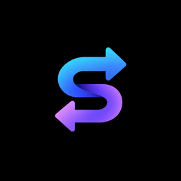

Syncify
One mouse & keyboard. Two machines.
Idle
Layout
Pick the monitor, then which edge leads to the other computer.
Example: Mac under your left screen → select Left + ↓
Exit via bottom of Left
Connect
Your IPs will show here